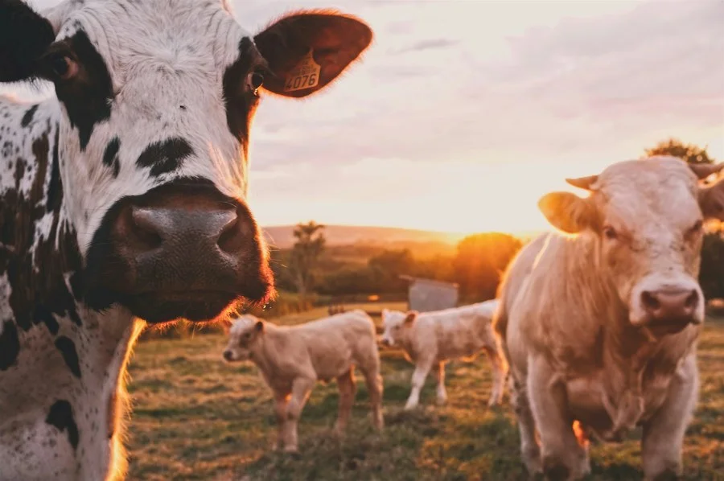
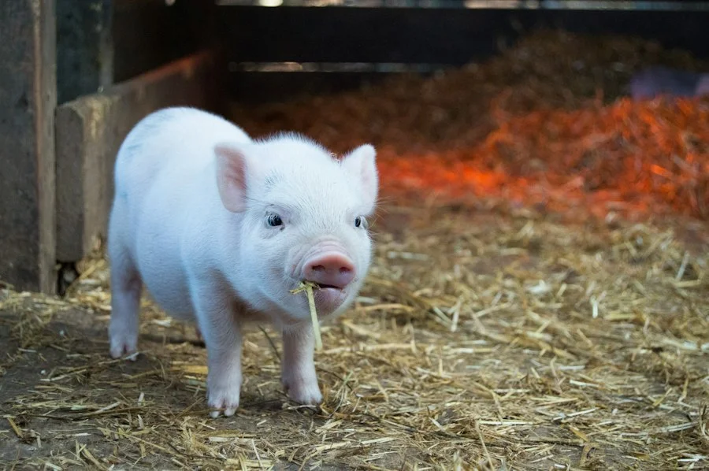
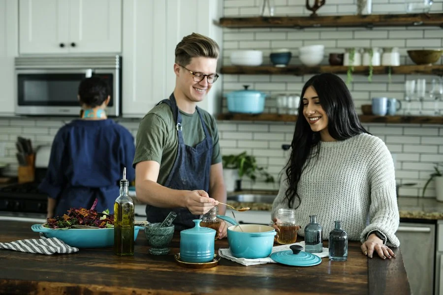

Mengenal komitmen kami dalam menghadirkan layanan aqiqah yang sesuai sunnah Rasulullah SAW, amanah, higienis, dan membahagiakan seluruh keluarga.
Aqiqah Dombastis didirikan atas dasar kepedulian kami terhadap pentingnya kemudahan bagi para orang tua dalam menjalankan syariat aqiqah tanpa rasa was-was. Kelahiran sang buah hati adalah karunia agung dari Allah SWT yang patut disambut dengan rasa syukur mendalam.
Banyak orang tua yang memiliki kesibukan dan kesulitan mengurus pembelian domba sehat, prosesi penyembelihan syar'i, pengulitan, hingga memasak daging tanpa bau prengus. Dombastis hadir sebagai sahabat keluarga, menjamin seluruh proses dari hulu (pemilihan domba sehat di peternakan) hingga hilir (pengantaran nasi bento hangat ke pintu rumah) berjalan dengan standar syar'i dan kebersihan mutlak.

Menjadi penyedia layanan aqiqah syar'i terdepan dan paling terpercaya di Indonesia yang dikenal karena kehalalan, kelezatan cita rasa masakan khas nusantara, dan pelayanan yang memuliakan shohibul aqiqah.
Kualitas daging yang lezat berawal dari pemeliharaan ternak yang sehat dan proses pengolahan dapur yang higienis.
Kandang domba Aqiqah Dombastis mengusung sistem kandang panggung modern dengan sirkulasi udara bersih dan pembersihan kotoran harian. Domba diberikan pakan hijauan segar berkualitas dipadukan dengan konsentrat probiotik alami agar daging tebal dan sehat.

Tim koki Dombastis menggunakan teknik pengolahan daging domba modern dengan pencucian higienis dan perendaman rempah aromatik nusantara (seperti kapulaga, kayu manis, jahe, ketumbar, dan sereh).

Customer service kami siap menyambut pertanyaan Anda seputar syarat hewan, pemilihan menu masakan, hingga booking jadwal aqiqah.